6 BTS ERPC 1ère année
6.1 Vocabulaire
| Français | English |
|---|---|
| alimenter | to feed (fed, fed) |
| à travers quelque chose | through |
| autocollants | stickers |
| brochures | booklets |
| bye | au revoir |
| cartes de visite | business cards |
| charger | to load |
| commencer | to begin (began, begun) |
| de la poudre | powder |
| de l’encre | ink |
| de l’huile | oil |
| dépliants | brochures |
| des agrafes | staples |
| deux fois | twice |
| dos carré-collé | perfect binding |
| équipement, installation | facility |
| étape | a stage |
| expédier | to ship out |
| fonctionner | to work |
| glisser | to glide |
| gravé au laser | laser-etched |
| hello | bonjour |
| humecter, humidifier | to dampen |
| imprimer | to print |
| item fonctionner | to work |
| le dos (d’un livre) | the spine |
| le grammage | paper weight |
| le recto | the front |
| le verso | the back |
| livrer | to deliver |
| mieux convenir à | to be best suited for |
| mince, fin | thin |
| pailleté, miroitant | shimmery |
| piqûre à cheval | saddle-stitched |
| précis, aiguisé | sharp |
| recto-verso | both sides |
| relier (un livre) | to bind (bound, bound) |
| reliure à spirale | coil binding |
| résulter dans, aboutir à | to result in |
| sans | without |
| stockage | storage |
| taille | size |
| tomber, chuter | to fall (fell, fallen) |
| trade | commerce |
| une agence de communication | an ad(vertising) agency |
| une configuration | a setup |
| une couche | a layer |
| une couverture, un blanchet | a blanket |
| une encoche | a notch |
| une enveloppe | a wrap |
| une fente | a slit |
| une finition brillante | a glossy finish |
| une finition mate | a matte finish |
| une fois que | once |
| une plaque | a plate |
| une sous-couche | an under-coat |
| une surface, une tache | a spot |
| un exemplaire | a copy |
| un fichier numérique | a digital file |
| un massicot | a trimmer |
| un pli | a fold |
| un rouleau | a roller |
| un sondage | a poll |
| un stage | an internship |
| piqûre à cheval | saddle-stitching |
| reliure spirales | coil binding |
| expédier qqch | to ship out stg |
| une nuance de couleur | a hue |
| délavé | washed out |
| mat | matte |
| brillant | glossy |
| mélanger | to mix |
| être conscient de | to be aware of |
| afficher | to display |
| à propos de, à l’égard de | regarding |
| éviter | to avoid |
| avec précision, exactement | accurately |
| s’assurer de qqch, garantir | to ensure |
| représenter | to depict |
| un nuancier | a fan deck |
| indépendamment de | regardless of |
| correspondre à, bien aller avec | to match |
| vif, éclatant | bright |
| une usine | a factory |
| avoir lieu, se dérouler | to take place |
| briller | to shine |
| un bâtonnet | a rod |
| un cône | a cone |
| duper, rouler, tromper | to trick |
| un fabricant | a manufacturer |
| une onde | a wave |
| se chevaucher | to overlap |
| une cellule | a cell |
| épineux, délicat | tricky |
| finir par… | to end up doing… |
| très long | lengthy |
| épais | thick |
| couper | to trim |
| plier | to fold |
| peser | to weigh |
| d’après, selon | according to |
| lisse, doux | smooth |
| rugueux | rough |
| réunir | to gather |
| le dos d’un livre | the spine |
| title | Trouvez dans l’article les mots correspondant aux traductions suivantes: |
| une échéance | a deadline |
| engager, embaucher | to hire |
| dépenser | to spend |
| par exemple | for instance |
| once | une fois que |
| célèbre | famous |
| rendre, donner | to hand out |
| tôt | early |
| une réunion | a meeting |
| fournir | to provide |
| une séance photo | a photo shoot |
| la maquette, la disposition | the layout |
| une approbation, un accord | an approval |
| une publicité, une annonce | an ad |
| planifier | to schedule |
| a sample | un échantillon |
| frais d’adhésion | membership fees |
| des dépenses | expenditures |
| une norme | a standard |
| le gagne-pain, la source de revenus | the livelihood |
| une matière première | a raw material |
| un revenu | an income |
| fournir, procurer | to provide |
| durable | sustainable |
| un détaillant | a retailer |
| remplir des conditions requises | to meet requirements |
| permettre à qn de faire | to allow sb to |
| gestion, direction | stewardship |
| engagement | commitment |
| une marque | a brand |
| mettre en valeur, souligner | to highlight |
| améliorer | to enhance |
| profiter à, bénéficier à | to benefit |
| traçabilité | chain of custody |
| bois d’œuvre | timber |
| récolter | to harvest |
| s’assurer, garantir | to ensure |
| écraser | to squash |
| sécher | to dry |
| une décharge | a landfill |
| ajouter | to add |
| un matériau (aussi : tissu) | a material |
| des meubles | furniture |
| un appareil électrique | an electric appliance |
| un achat | a purchase |
| une recommandation, une consigne | a guideline |
| des déchets | waste |
| jeter, se débarrasser de | to dispose of |
| acier | steel |
| jeter des déchets sur la voie publique | to litter |
| une étape, un pas | a step |
| moyen, la moyenne | average |
| récolter, moissonner | to harvest |
| acheter | to purchase |
| respecter une norme | to meet a standard |
| mettre en place | to implement |
| planification anticipée | forward planning |
| la façon, la manière | the way |
| un coût initial | an upfront cost |
| récupérer, recouvrer | to recover |
| dangereux | hazardous |
| une amélioration | an improvement |
| demander, exiger | to require |
| un consommateur | a consumer |
| manipuler | to handle |
| gestion des déchets | waste management |
| en grosses quantités (achat) | in bulk |
| frais d’élimination des déchets | disposal costs |
| coûts de fonctionnement | running costs |
| économiser | to save money |
| surveiller | to monitor |
| devrais, devriez | should |
| un logiciel | a software |
| le même que | the same as |
| un document d’information | a fact sheet |
| améliorer | to improve |
| des économies | savings |
| tandis que | while |
| éviter | avoid |
| augmenter | to increase |
| en faisant qqch | through doing stg |
| le lieu de travail | the workplace |
| un syndicat | a union |
| un fournisseur | a supplier |
| vérifier | to check |
| une sensibilisation | awareness |
| jeter | to dispose of |
| accomplir | to achieve |
| une cible | a target |
| une facture | an invoice |
| le respect de la loi | compliance |
| peu précis, grossier | rough |
| à travers | through |
| brut, cru | raw |
| une lame | a blade |
| de l’argile | clay |
| mélanger | to blend |
| une installation, une usine | a plant |
| gérer | to manage |
| fabriquer | to manufacture |
| du bois d’œuvre | timber |
| décidu (qui perd ses feuilles en automne) | deciduous |
| de l’eau de javel | bleach |
| une bûche | a log |
| l’écorce | bark |
| enlever, retirer | to remove |
| une scierie | a saw mill |
| la pâte à papier | pulp |
6.2 Définitions
| Français | English |
|---|---|
| Accordion Fold | A fold constructed by folding a sheet three times in a zig-zag pattern, creating a piece that expands like an accordion. |
| Double Gate Fold | A fold constructed by folding a sheet inwards on each side, creating two side panels that open like doors, and then folding the sheet in half. |
| Double Parallel Fold | A fold, also known as a parallel center, constructed by folding a sheet in half, and then in half once again. |
| Flat (No Folding) | No folding or scoring |
| Gate Fold | A fold constructed by folding a sheet inwards on each side, creating two side panels that open like doors or gates. |
| Half-Fold | A fold, also known as a book fold, constructed by folding a sheet once, creating two equal halves. |
| Right-Angle Half Fold | A fold, also known as a French fold, constructed by folding a sheet in half horizontally, and then in half once again vertically. |
| to coat stg | to cover or spread with a finishing, protecting, or enclosing layer |
| to dampen stg | to make stg moderately wet |
| Tri-Fold / Letter-Fold | A fold, also known as a letter-fold, constructed by folding a sheet twice like a mailed letter. |
| Z-Fold | A fold, also known as a fan fold or zig-zag fold, constructed by folding a sheet twice in the shape of the letter “Z”. |
| grease | a thick lubricant |
| to repel stg | to repulse or resist stg |
| to rub | to move along the surface of a body with pressure |
| a burr | a thin ridge or area of roughness produced in cutting or shaping metal |
| favoured | prefered |
| a stencil | an impervious material perforated with lettering |
| title | More on colours |
| Analogous colours | colours adjacent to one another on the colour wheel (e.g. violet, red and orange). |
| Complementary colours | opposites on the colour wheel. This relationship will produce visual tension and “shock.” |
| Triadic colours | three colours evenly spaced on the colour wheel. One colours dominates, the second supports, and the third accents. |
| Gradient | a gradual change from one colour to another. (For example, blue transitioning gradually to green). |
| Opacity | synonymous with non-transparency. The more transparent an image, the lower its opacity. |
| image | https://99designs-blog.imgix.net/blog/wp-content/uploads/2017/02/Kern-Lead-Track-full-width.png?auto=format&q=60&fit=max&w=930 |
| kerning | the adjustment of space between pairs of letters in the same word. |
| adds or subtracts space between letters to create more visually appealing and readable text. | |
| leading | also known as line-height, the space between two lines of text. |
| tracking | the adjustment of space for groups of letters and entire blocks of text. |
| affects every character in the selected text and is used to change its overall appearance. | |
| title | Paper properties |
| Paper color | Most paper is white. However, there are hundreds of different shades of white. Some whites are very warm, almost yellow. Others are cool, almost blue or gray. |
| Paper coating | How smooth the surface of the paper feels. The degree of smoothness is created during the paper-making process. |
| Paper weight | Paper is graded according to its weight — which is usually expressed in terms of how much 500 sheets of the paper in its standard size weighs. |
| Strength | how well the paper holds up under stress. Paper bags and envelopes need a high degree of strength. |
| Thickness | Thick papers don’t have to weigh a lot. Some books are printed on very thick but lightweight paper, which makes the book look like it has more pages. |
| Brightness | how light reflects off the paper. Some papers contain fluorescents so they appear brighter. This makes the paper sparkle more, but can affect the color of printed images. |
| Opacity | refers to how much the text or images printed on the other side of the page show through. |
| title | Office bindings |
| Three-ring binding | uses three punched holes in the paper and a three-ring binder. |
| Plastic comb binding | uses a plastic insert with teeth that fit into rectangular holes in the paper. |
| Spiral binding | uses a metal or plastic spiral that coils through many small holes on the side of the paper. |
| Wir-O binding | similar to spiral binding, but instead of a single spiral, two wire teeth fit into rectangular holes in the paper. |
| Velo binding | uses two plastic strips on either side of the document. The strips are held together with plastic pins and bound together with heat. |
| Fastback binding | uses a cloth or paper strip wrapped around the spine of the pages and then glued in position. |
| Saddle-stitch binding | uses two or more staples inserted right at the fold of the paper. |
| Side-stitch binding | combines all the signatures and the cover and stitches them together with staples on the outside of the book cover. |
| Perfect binding | gathers all the signatures together. The spine is then ground to create a fl at edge, and a paper cover is glued around the spine. |
| Lay-flat binding | gathers all the signatures together and grinds the spine as in perfect binding. Th e cover is then glued to the book at each side of the spine, which allows the pages of the book to lay flat when opened. |
{kind=link}
6.3 Traductions
| Français | English |
|---|---|
| Quel âge avez-vous ? | How old are you? |
| J’ai 19 ans | I am 19 (years old). |
| Où habitez-vous ? | Where do you live? |
| J’habite à … | I live in … |
| Où étiez-vous l’année dernière ? | Where were you last year? |
| J’étais au lycée | I was in high school |
| Avez-vous déjà fait un stage dans une entreprise ? | Have you already done an internship in a company? |
| Avez-vous travaillé pendant les vacances d’été ? | Did you work during the summer holidays? |
| Quelles sont vos défauts et qualités ? | What are your drawbacks and qualities? |
| Pourquoi avez-vous choisi l’École Estienne ? | Why did you choose l’École Estienne ? |
| Je l’ai choisie parce que… | I chose it because … |
| Quels sont vos passe-temps favoris ? | What are your favourite hobbies? |
| J’aim beaucoup le sport et la lecture | I enjoy doing sport and reading |
| Qu’ont répondu les étudiants la semaine dernière? | What did the students answer last week? |
| La semaine dernière, 4 étudiants sur 19 ont répondu “non”. | Last week, 4 students out of 19 answered “no”. |
| Où as-tu travaillé pendant ton stage ? | Where did you work your stage ? |
| J’ai travaillé dans une entreprise en banlieue. | I worked in a company in the suburbs. |
| As-tu parlé aux clients ? | Did you speak to the customers? |
| J’ai parlé à beaucoup de clients. | I spoke to a lot of customers. |
| J’ai passé mon enfance à Paris | I spent my childhood in Paris |
| J’ai fait un stage de deux mois dans une entreprise l’année dernière | I did an internship for two months in a company last year |
| Je voudrais faire un stage dans une entreprise près de chez moi | I would like to do an internship in a company close to home. |
| Je voudrais commander 2500 dépliants | I would like to order 2500 folded leaflets. |
| Quand pouvez-vous les expédier? | When can you ship them out? |
| Le manager veut que nous travaillions dans l’entreprise | The manager wants us to work in the company |
| Ces cartes de visite doivent être imprimées avant la fin de la semaine | These business cards must be printed before the end of the week. |
| Combien d’exemplaires voulez-vous que j’imprime? | How many copies do you want me to print? |
| J’aimerais que vous en imprimiez 200 | I would like you to print 200. |
| As-tu envoyé le fichier numérique aux clients hier? | Did you send the digital file to the customers yesterday? |
| Je l’envoie maintenant | I am sending it now. |
| Quel âge-avez-vous? | How old are you? |
| J’ai 19 ans | I am 19 |
| As-tu déjà fait un stage ? | Have you ever done an internship? |
| Je te conseille de rappeler le client | I advise you to call the customer back. |
| As-tu pris le nuancier? | Did you take the fan deck? |
| Ces couleurs vives doivent être imprimées uniquement en couverture | These bright colours must be printed on the cover only. |
| Mon patron veut que je suive les étapes | My boss wants me to follow the steps. |
| As-tu appelé le client hier? | Did you call the customer yesterday? |
| J’ai oublié, je le ferai demain. | I forgot, I will do it tomorrow. |
| Le client veut que j’ajoute une illustration. | The client wants me to add an illustration. |
| Pourrais-tu regarder mon écran, je crois qu’il est cassé. | Could you have a look at my screen, I believe it is broken. |
| Pendant mon stage, mes collègues ne voulaient pas que j’utilise le massicot. | During my internship, my colleagues didn’t want me to use the trimmer. |
| Le fabricant de cette encre attend des clients qu’ils la recyclent. | The manufacturer of this ink expects customers to recycle it. |
| As-tu expédié les livres piqués à cheval la semaine dernière? | Did you ship out the saddle-stitched books last week? |
| Les bâtonnets nous permettent de voir la nuit (un peu!). | Rods enable us to see at night (a little!) |
| J’aimerais que le professeur réexplique la leçon | I would like the teacher to explain the lesson again. |
| Il y a deux semaines, nous avons parlé de la chaîne de traçabilité | Two weeks ago, we spoke about the chain of custody. |
| Ces normes garantissent le développement durable | These standards guarantee sustainability. |
| La production de matières premières doit être durable | The production of raw materials must be sustainable. |
| Le gouvernement veut que nous recyclions davantage | The government wants us to recycle more |
| A qui as-tu envoyé les documents? | Who did you send the documents (to)? |
| Je les ai envoyés à un nouveau client | I sent them to a new customer. |
| Nous devons réduire les dépenses de l’entreprise | We must reduce the company’s expenditures. |
| Comment as-tu créé cette maquette? | How did you create this layout? |
| J’ai utilisé un nouveau logiciel | I used a new software. |
| Tu devrais l’essayer. | You should try it. |
| Je ne peux pas : mes collègues veulent que j’utilise le même logiciel qu’eux. | I can’t: my colleagues want me to use the same as them. |
| Notre directeur veut que notre entreprise mette en place une meilleure gestion des déchets | Our manager wants our company to implement better waste management. |
| Nous devons respecter des normes environnementales | We must meet environmental standards. |
| Cela exige des dépenses initiales. | This requires upfront expenditures. |
| Pour réduire les coûts, nous devons acheter les matières premières en grosses quantités | We must purchase raw materials in bulk in order to reduce costs. |
6.4 Flashcards
| Images | Expressions |
|---|---|
| 07 signature insertions | |
| 08 spread dd | |

|
1 a carton lined with aluminium |

|
10 gravy granules |

|
11 landfill |

|
2 a child on a playmat |
| 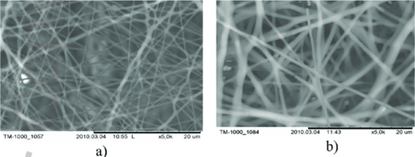 | 3 a fibrous solution |

|
4 a pump |

|
5 a squashed tomato |
| 6 a whale | |

|
7 building materials |
| 8 garden furniture | |

|
9 gravy |
| 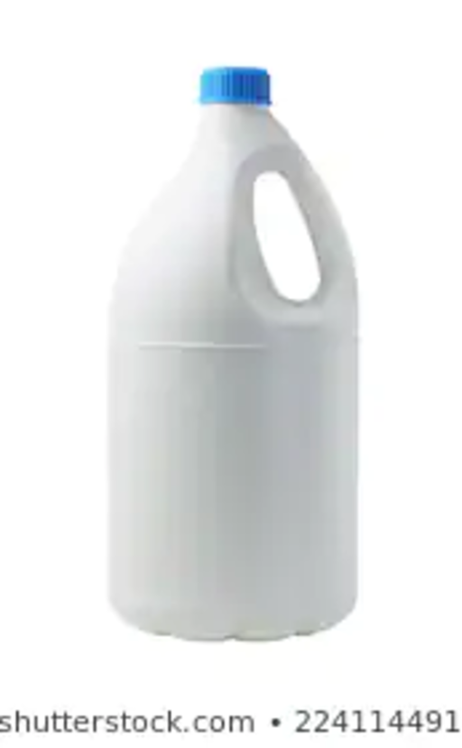 | a bleach bottle |
| 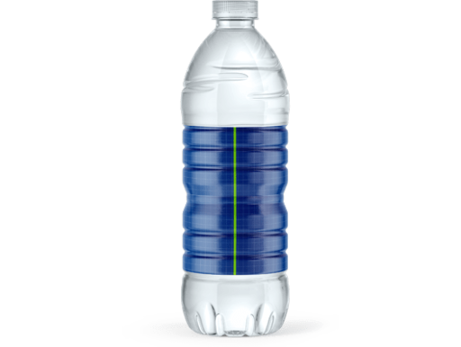 | a bottle with a blue sleeve |
| a box | |
| 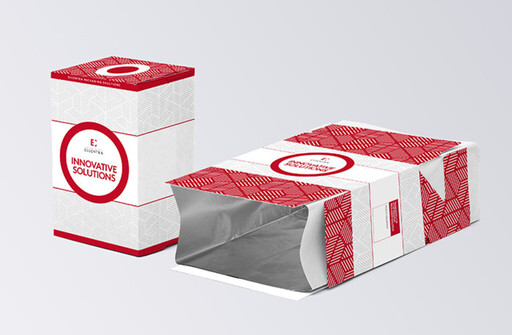 | a carton lined with aluminium |
| a cell | |

|
a child on a playmat |
| 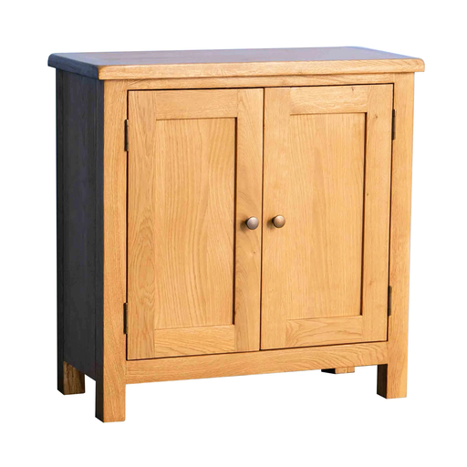 | a cupboard |
| a display | |
| 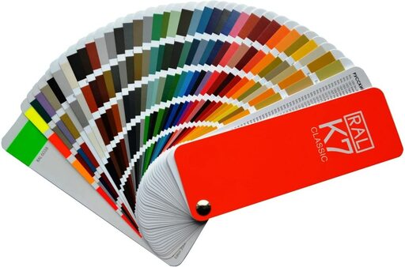 | a fan deck |
| a few panels | |
| a fibrous solution | |
| 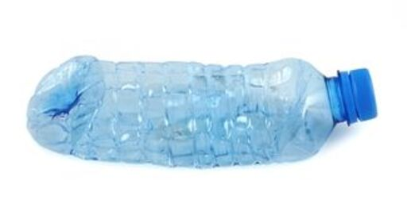 | a flattened bottle |
| a folded edge | |
| a gate | |
| 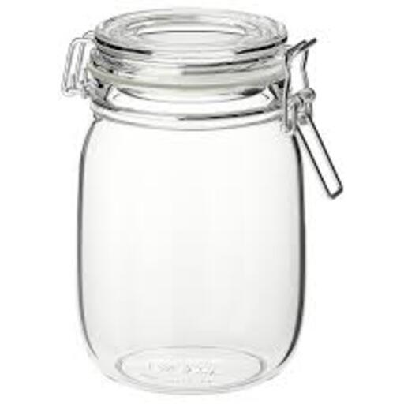 | a glass jar |
| a grid | |
| a hair dryer | |
| 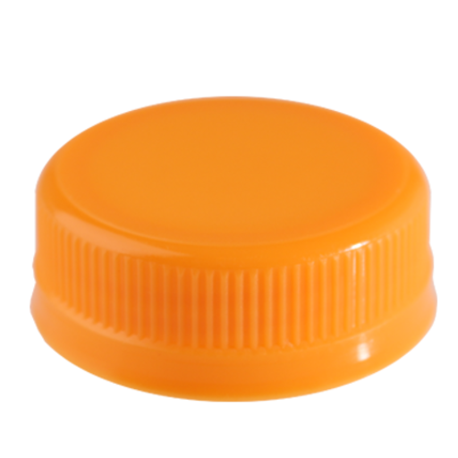 | a link |

|
a locking mechanism |
| a magazine spread | |

|
a monitor |
| a notch in an envelope | |
| 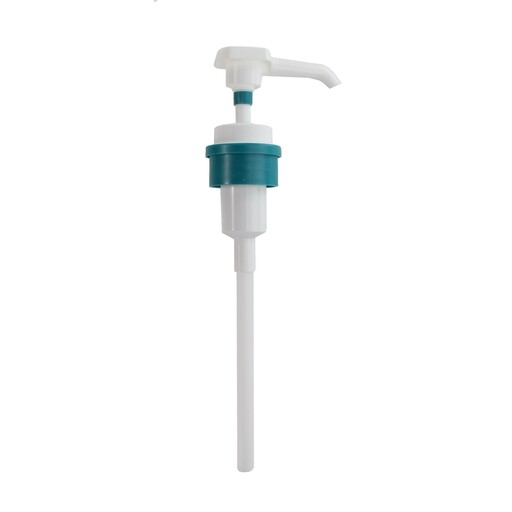 | a pump dispenser |
| 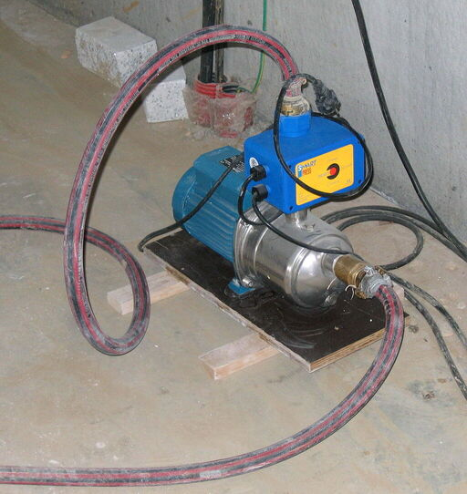 | a pump |
| a radial design | |
| a scale | |
| a schedule | |

|
a screen |
| a sheet | |
| a shower | |
| 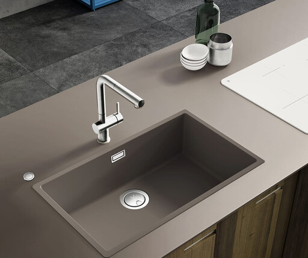 | a sink |
| a slit | |
| a squashed tomato | |
| a symmetrical balance | |
| a three ring binder | |
| 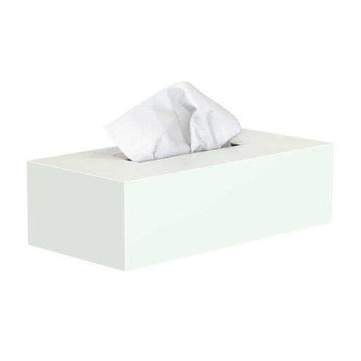 | a tissue box |
| 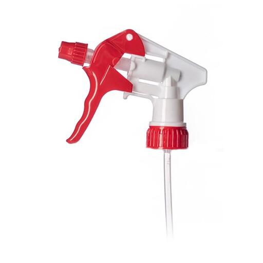 | a trigger spray |
| a trimmer | |
| a wave | |

|
a whale |
| a wrap | |
| accordian fold | |
| air freshener | |
| an ad in the street | |
| an asymmetrical balance | |
| an edge | |
| blank pages | |
| 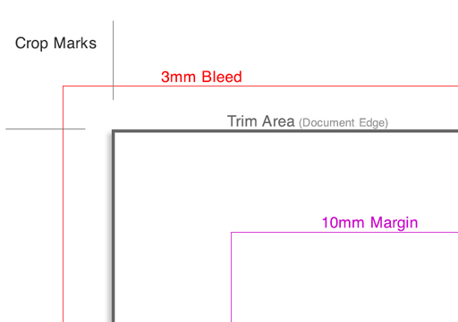 | bleed and crop marks |

|
book spines |
| 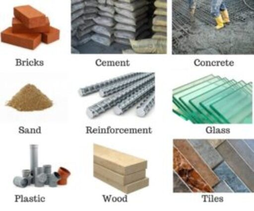 | building materials |
| 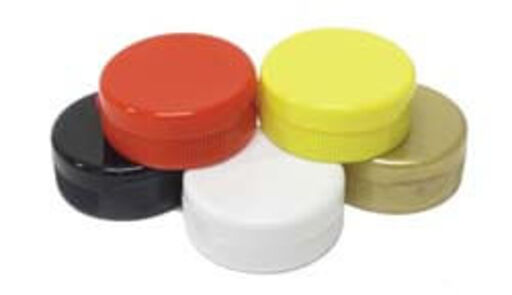 | caps and lids |

|
carboard packaging |
| coil binding | |
| double gate fold | |
| double parallel fold | |
| electric appliances | |
| fastback binding | |

|
garden furniture |
| gate fold | |
| 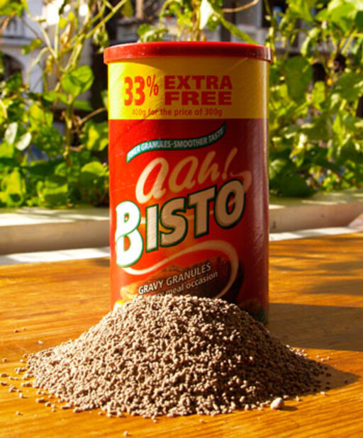 | gravy granules |
| gravy | |
| half fold | |
| landfill | |
| lay flat binding | |
| perfect binding | |
| plastic comb binding | |
| right angle half fold | |
| rough and smooth textures | |

|
saddle stitch binding |
| saddle stitched | |
| shimmery | |
| side stitch binding | |
| spiral binding | |
| staples | |
| the retina | |
| the rule of thirds | |
| the spines of books | |
| to cross over | |
| to flip | |
| to glide | |
| to shine | |
| to shrink | |
| to weigh | |
| toothpaste on a toothbrush | |
| trifold | |

|
washing liquid |
| wirO binding | |
| z fold |
6.5 Pronunciation
| Images | Expressions |
|---|---|
| about | |
| accurate | |
| achieve | |
| age | |
| agency | |
| alignment | |
| allow | |
| amount | |
| analogous | |
| angle | |
| appliance | |
| approval | |
| area | |
| arrive | |
| benefit | |
| bind | |
| biology | |
| blade | |
| bleach | |
| booklet | |
| box | |
| bright | |
| brochure | |
| carton | |
| certain | |
| chemical | |
| chip | |
| citrus | |
| climate | |
| commitment | |
| company | |
| compliance | |
| consumer | |
| custody | |
| deadline | |
| detection | |
| display | |
| disposal | |
| early | |
| ensure | |
| equal | |
| equipment | |
| expiry | |
| facility | |
| favorite | |
| fiber | |
| fibrous | |
| filter | |
| fir | |
| fit | |
| fold | |
| forward | |
| fountain | |
| furniture | |
| gamut | |
| gate | |
| generic | |
| gradient | |
| granule | |
| gravy | |
| habit | |
| hazardous | |
| height | |
| hierarchy | |
| hue | |
| identify | |
| image | |
| improve | |
| ink | |
| interact | |
| internship | |
| lengthy | |
| liquid | |
| magazine | |
| manage | |
| manufacture | |
| market | |
| material | |
| mechanism | |
| nation | |
| once | |
| package | |
| palette | |
| panel | |
| poll | |
| profile | |
| pulp | |
| purchase | |
| raw | |
| receive | |
| reel | |
| region | |
| require | |
| retina | |
| rough | |
| schedule | |
| screen | |
| seal | |
| sheet | |
| shower | |
| signal | |
| signature | |
| singer | |
| smooth | |
| species | |
| spray | |
| squash | |
| staff | |
| standard | |
| staple | |
| stewardship | |
| stitch | |
| table | |
| target | |
| through | |
| tissue | |
| tooth | |
| trigger | |
| twice | |
| violet | |
| visual | |
| waste | |
| widow | |
| wrap |